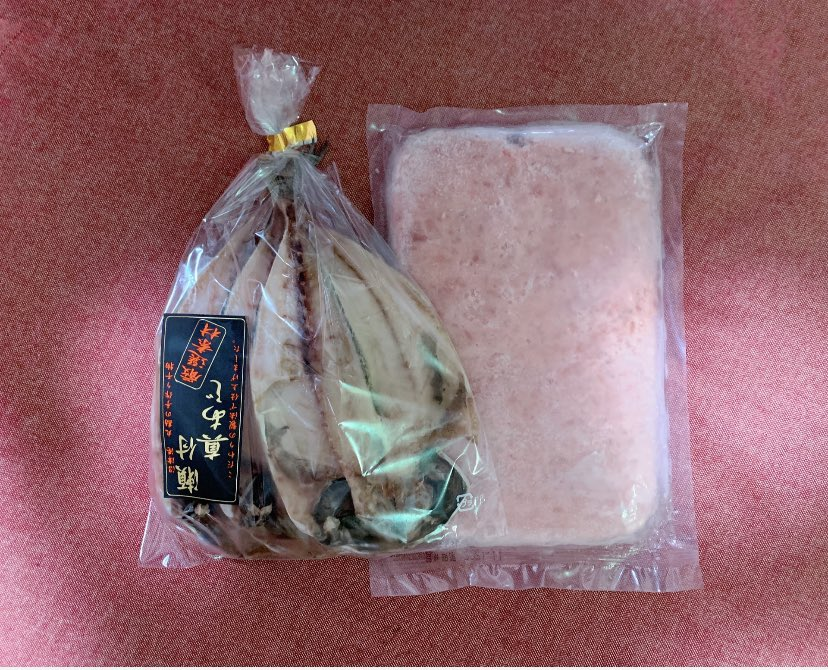
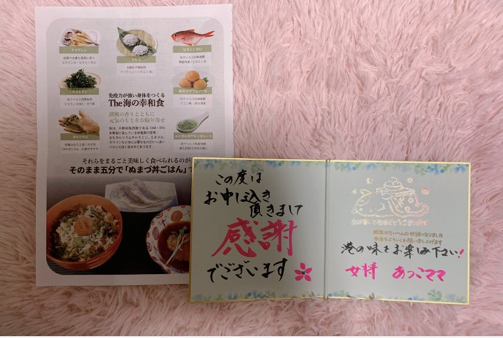
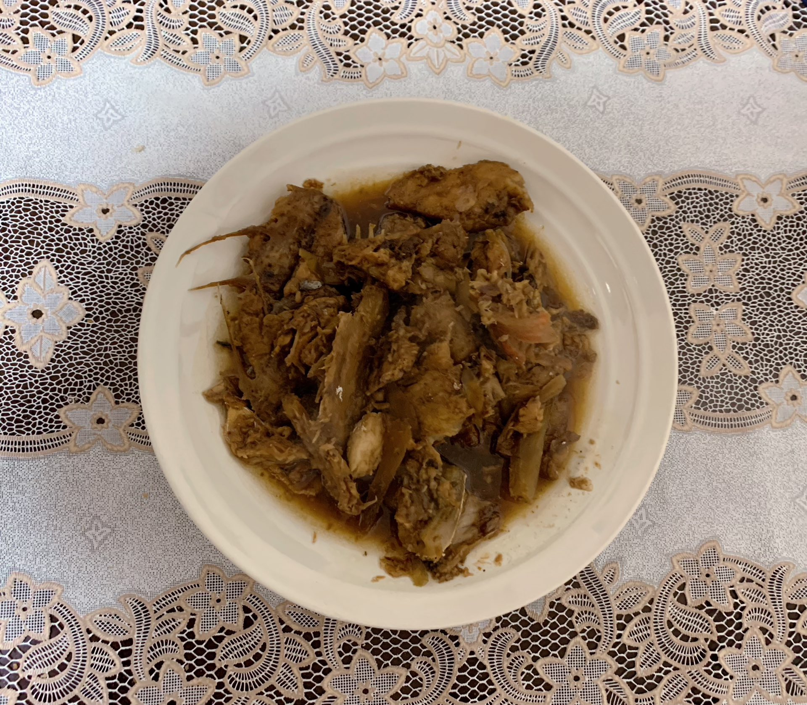
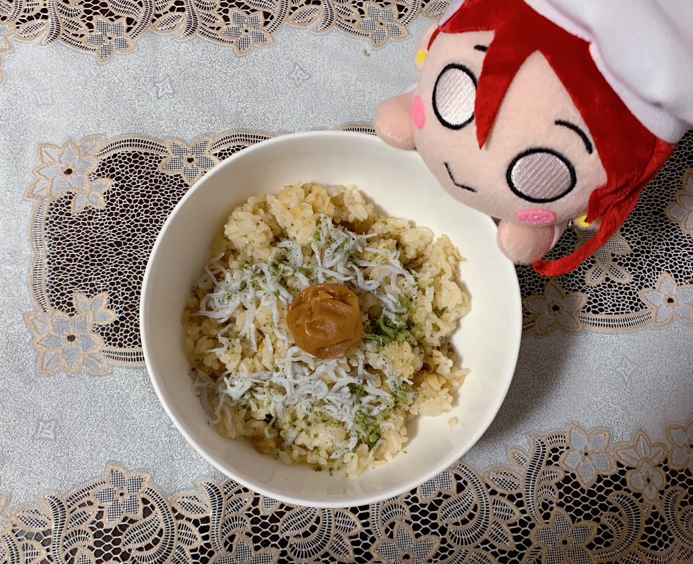

お取り寄せができるお店一覧
丸勘さん
■主な取り扱い商品：瀬付きあじ・赤ほっけ・のどぐろ・きんき・金目鯛・青のり・真いわし醤油干し・めひかり丸干し・駿河湾産釜揚げしらす・あじかまぼこなど
■注文方法：TEL・FAX・メールで注文が可能
[Twitter]丸勘本部のポンコツ☁POPゴリラ🦍
さかなや千本一 さん
■主な取り扱い商品："そのまま五分で「ぬまづ丼ごはん」（２人前）＋おかずのセット。 おかずは、金目鯛煮付け・金目鯛の姿煮・地アジのフライ・ブリのカブト煮・ブリのあら煮・まぐろのカマ焼きなど"
■注文方法：ネットで注文が可能
[Twitter]千本一 &かもめ丸 あつこママ
  